Inhalt Index DeskTop Bronstein

 Dynamische Systeme und Chaos Gewöhnliche Differentialgleichungen und Abbildungen Qualitative Theorie gewöhnlicher Differentialgleichungen Topologische Äquivalenz von Differentialgleichungen
Dynamische Systeme und Chaos Gewöhnliche Differentialgleichungen und Abbildungen Qualitative Theorie gewöhnlicher Differentialgleichungen Topologische Äquivalenz von Differentialgleichungen


Gegeben sei neben (17.1) mit dem zugehörigen Fluß  eine weitere autonome Differentialgleichung
eine weitere autonome Differentialgleichung
wobei 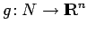 eine auf der offenen Menge 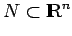 gegebene Cr-Abbildung ist. Der Fluß 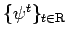 von (17.22) möge ebenfalls existieren.
Die Differentialgleichungen (17.1) und (17.22) (bzw. deren Flüsse) heißen topologisch äquivalent, wenn es einen Homöomorphismus 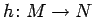 (d.h., h ist bijektiv, h und h-1 sind stetig) gibt, der die Orbits von (17.1) in Orbits von (17.22) unter Beibehaltung der Orientierung, aber nicht unbedingt der Parametrisierung überführt. Die Systeme (17.1) und (17.22) sind also topologisch äquivalent, wenn es neben dem Homöomorphismus eine stetige Abbildung 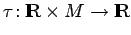 gibt, die bei jedem fixierten  streng monoton wachsend ist,
streng monoton wachsend ist,  auf
auf  abbildet, für die 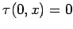 für alle
abbildet, für die 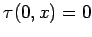 für alle  ist und die der Beziehung 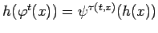 für alle
ist und die der Beziehung 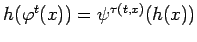 für alle  und
und  genügt.
genügt.
Bei topologischer Äquivalenz gehen Ruhelagen von (17.1) in Ruhelagen von (17.22) und periodische Orbits von (17.1) in periodische Orbits von (17.22) über, wobei die Perioden nicht unbedingt übereinstimmen. Sind also zwei Systeme (17.1) und (17.22) topologisch äquivalent, so stimmt die topologische Struktur der Zerlegung des Phasenraumes in Orbits überein. Sind zwei Systeme (17.1) und (17.22) topologisch äquivalent über den Homöomorphismus und erhält h sogar die Parametrisierung, d.h. gilt 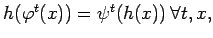 so heißen (17.1) und (17.22) topologisch konjugiert.
Topologische Äquivalenz bzw. Konjugiertheit kann sich auch auf Teilmengen der Phasenräume M und N beziehen. Ist z.B. (17.1) auf 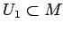 und (17.22) auf 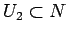 definiert, so heißt (17.1) auf U1 topologisch äquivalent zu (17.22) auf U2, wenn ein Homöomorphismus 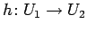 existiert, der die Schnitte der Orbits von (17.1) mit U1 in Schnitte der Orbits von (17.22) mit U2 unter Beibehaltung der Orientierung überführt.
| Beispiel A |
|
Homöomorphismen für (17.1) und (17.22) sind Abbildungen, bei denen z.B. Strecken und Stauchen der Orbits erlaubt ist, Aufschneiden und Schließen der Orbits dagegen nicht. Die zu den Phasenporträts der folgenden linken und mittleren Abbildung gehörenden Flüsse sind topologisch äquivalent; die zur linken und rechten Abbildung gehörenden Flüsse dagegen nicht. |
| Beispiel B |
|
Gegeben seien die beiden linearen ebenen Differentialgleichungen (s. Lit. 17.19) 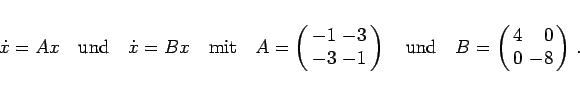
Der Homöomorphismus 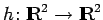 mit 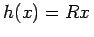, wobei 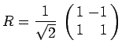 ist, und die Funktion 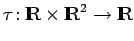 mit 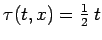 überführen die Orbits des ersten Systems in Orbits des zweiten Systems, so daß eine topologische Äquivalenz vorliegt. |